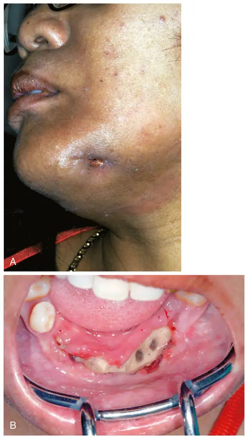

نسخه استخراجشده؛ ترجمه یا تأیید علمی انجام نشده است. وضعیت: captured
خانم ۷۰ سالهای با سرطان پستان و متاستاز استخوانی ماهی یک بار زولدرونیک اسید تزریقی میگیرد. سه ماه پیش مولر پایینش کشیده شد و هنوز استخوان سفید در ساکت پیداست. این چیست؟

این استئونکروز فک ناشی از دارو (MRONJ) است. داروهای ضدجذب استخوان (antiresorptive) کار استئوکلاست را مهار میکنند؛ تعادل نوسازی استخوان فک به هم میخورد و زخم استخوانی بسته نمیشود.
این داروها در متاستاز استخوانی و مولتیپل میلوما داده میشوند تا جلوی شکستگی پاتولوژیک را بگیرند. هرچه دوز تجمعی بیشتر و مصرف طولانیتر باشد، خطر بیشتر است. MRONJ خودبهخود هم رخ میدهد، ولی بیشتر پس از کشیدن، در زمینهی عفونت پریودنتال، ضربه یا فشار دنچر؛ و بیش از همه در مندیبل خلفی.
تعریف: استخوان بیرونافتاده، یا استخوانی که از راه فیستول با پروب لمس شود، که بیش از ۸ هفته مانده باشد؛ در بیماری که داروی ضدجذب یا مهارکنندهی آنژیوژنز گرفته و سابقهی رادیوتراپی فک یا متاستاز در فک ندارد.
مرحلهبندی AAOMS درمان را تعیین میکند و برای استئورادیونکروز هم به کار میرود.
در همهی مرحلهها: سکستر لق را بدون عریان کردن استخوان سالم بردار. دندان علامتدار درون استخوان نکروز را میشود کشید؛ بعید است روند را بدتر کند. استخوان بیرونافتاده خوب مسواک شود و بیمار دو بار در روز کلرهگزیدین بزند. قطع یا ادامهی دارو تصمیم پزشک بیمار است.